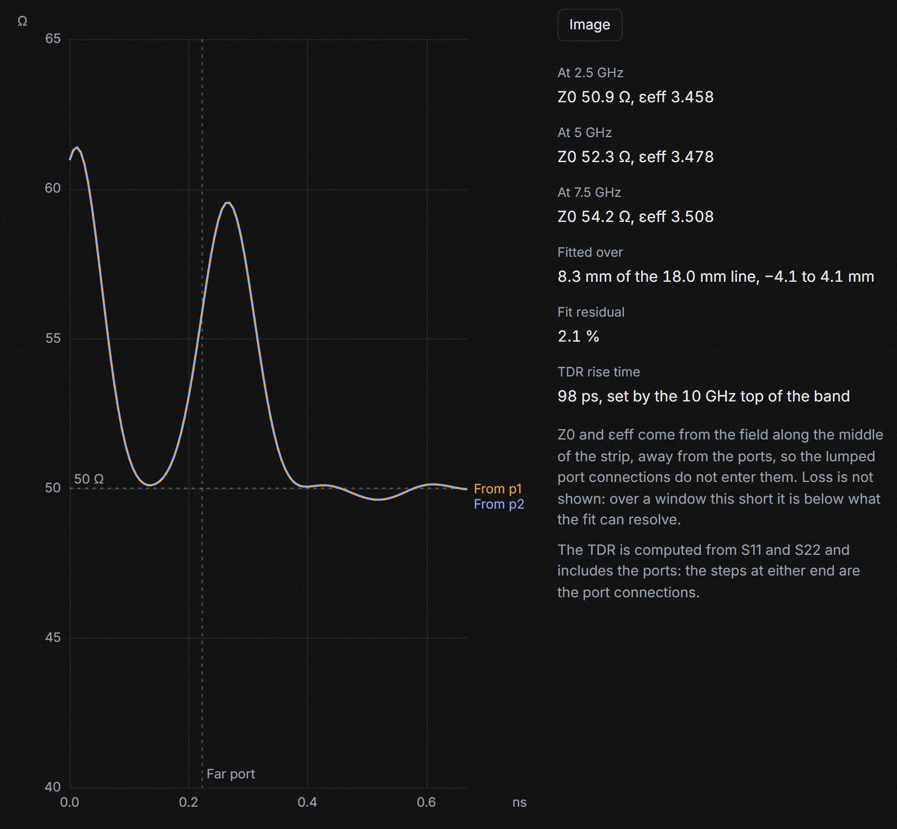
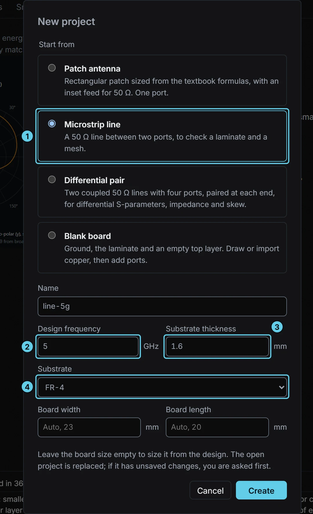
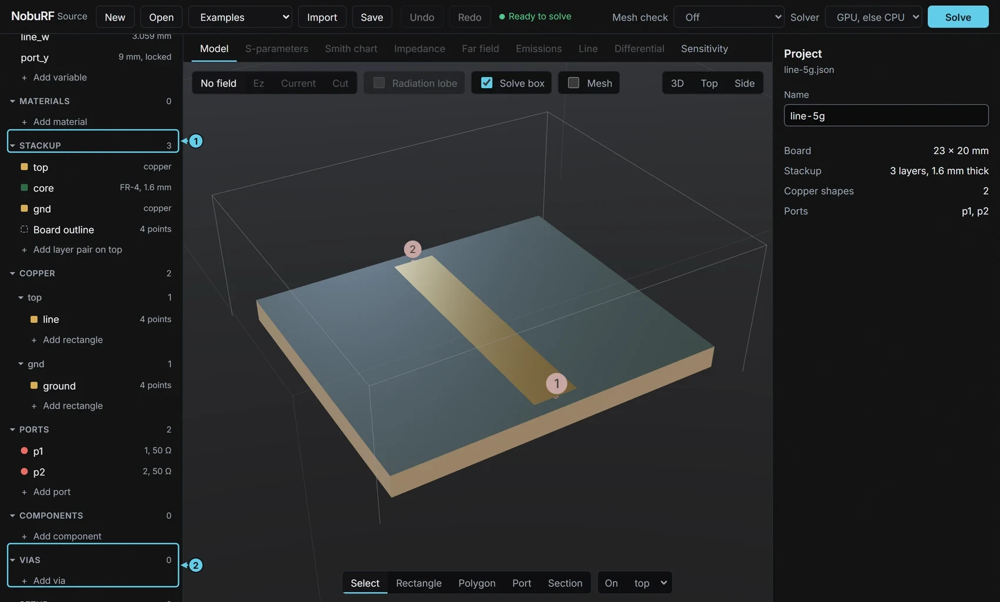
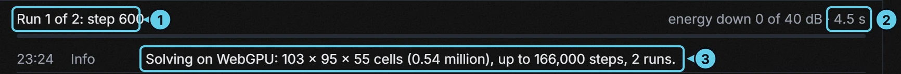
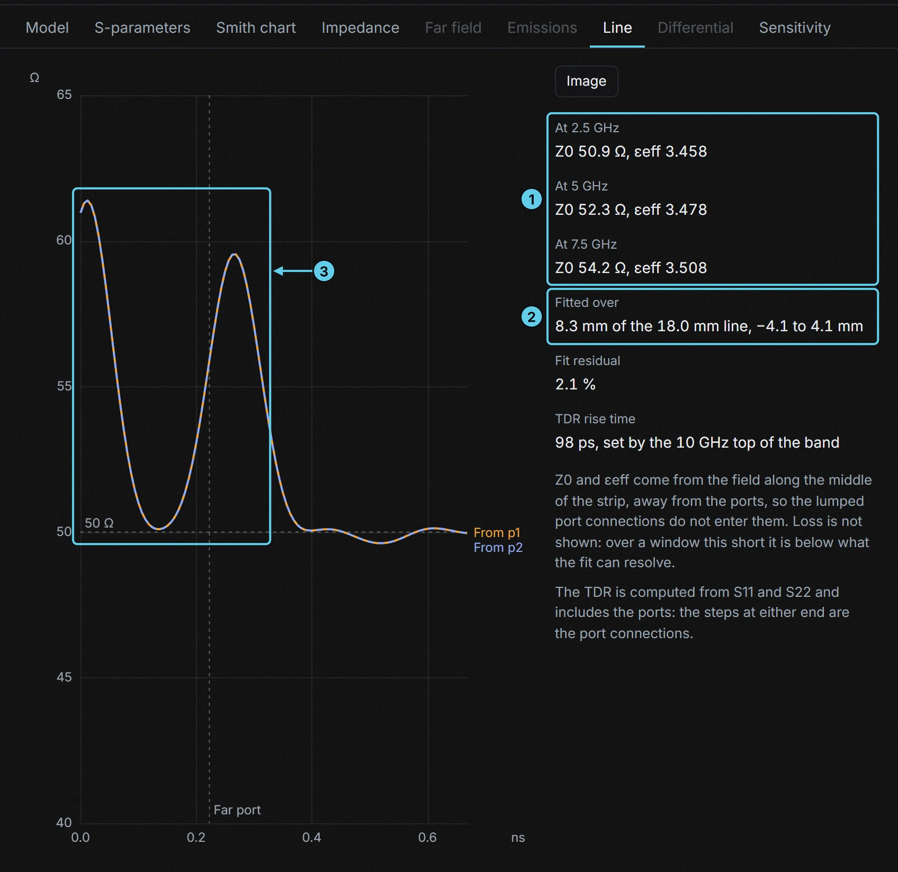
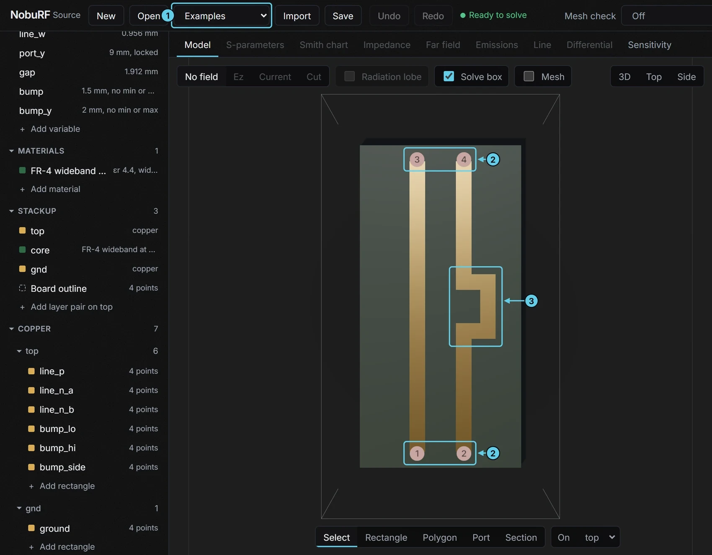
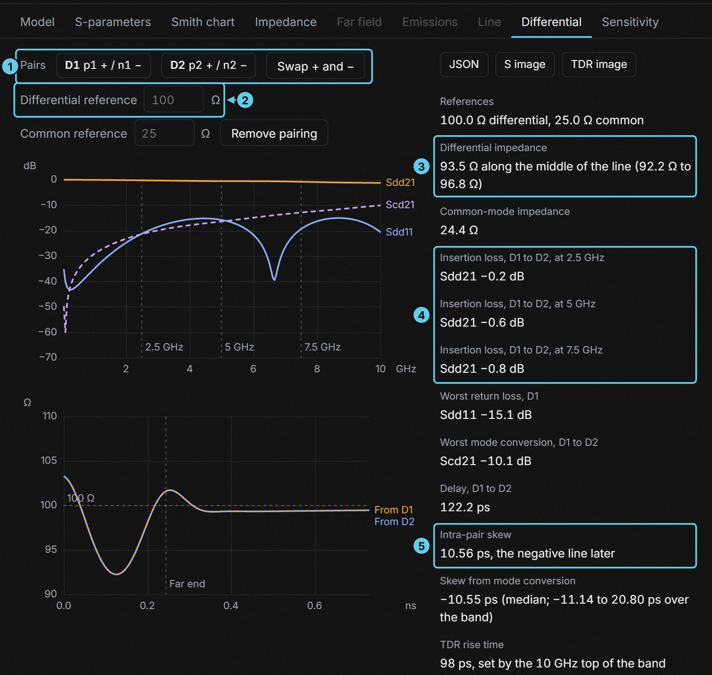

Simulate PCB traces and boards in your browser
NobuRF is a free 3D field solver that runs in Chrome or Edge. Besides antennas, it solves the copper on a PCB: a microstrip line's impedance, a differential pair's mixed-mode S-parameters and skew, and boards you import from your layout tool.

A 50 Ω microstrip line, step by step
Open the workbench in Chrome or Edge 113 or later. The line comes from a template.
-
Start a microstrip line
Choose New in the toolbar. Leave the board size empty and the template sizes the board from the design.
- Microstrip line: a 50 Ω line between two ports.
- Design frequency, 5 GHz.
- Substrate thickness, 1.6 mm.
- Substrate, FR-4. Then Create.

-
Check the model
The template draws a strip over a ground plane on a 23 by 20 mm board and puts a port at each end. Its width comes from a closed-form formula for 50 Ω, and it is a variable, so you can change it and solve again.
- line_w, the strip width: 3.059 mm.
- The two ports, p1 and p2, each 50 Ω. They show as 1 and 2 on the board.

-
Solve
Press Solve. NobuRF drives one port at a time, so two ports take two runs. On a laptop's GTX 1660 Ti both took 24 s.
- Which run, and what it is doing.
- The time so far.
- The mesh size and the number of runs: 0.54 million cells here.

-
Read the line
Open the Line tab. It reads the impedance and effective permittivity from the field along the strip, the way the drawing below shows.
- Z0 and εeff at 2.5, 5 and 7.5 GHz, the frequencies under "Report Z at": 50.9, 52.3 and 54.2 Ω.
- They come from the middle 8.3 mm of the 18 mm line, away from the ports.
- The TDR, from each end. The two bumps are the port connections, at this end and at the far port, which the dotted line marks. Between them, mid-line, the trace dips to about 50 Ω. After the far port the plot shows the 50 Ω load.



What the Line tab measures
The field solve reads Z0 a little above the closed-form 50 Ω, and the reading rises with frequency more than closed-form dispersion models predict. I haven't traced that rise yet, and the Line tab's method hasn't been checked against another solver. The solver under it has: on the microstrip benchmark in section 7.3 of the validation report, εeff is within 0.7 % of the closed form and Z0 within about 2 % of openEMS.
A differential pair, step by step
NobuRF solves the four ports of a pair one at a time and reads the 4 by 4 result as a pair: mixed-mode S-parameters, differential impedance, delay and skew.
-
Open the example
The example is a pair on a 10 by 20 mm board of 0.5 mm FR-4, and its negative line takes a detour, so it arrives later than the positive one.
- Examples, then diff-pair-detour.json.
- Four ports, each 50 Ω: p1 and n1 at one end, p2 and n2 at the other.
- The detour on the negative line.

-
Read the pair
Press Solve. Four ports take four runs, on a mesh of 0.48 million cells here, 27 s in all on the same laptop GPU. Then open the Differential tab.
- The pairing: D1 is p1 and n1 at one end, D2 is p2 and n2 at the other. Swap + and − here if they are the wrong way round.
- The differential reference. Empty means twice the port impedance, 100 Ω here; type your interface's, such as 90 Ω for USB.
- Differential impedance along the middle of the line: 93.5 Ω, from 92.2 to 96.8 Ω.
- Insertion loss, Sdd21: −0.2, −0.6 and −0.8 dB at 2.5, 5 and 7.5 GHz.
- Intra-pair skew: 10.56 ps, with the negative line later because of its detour.
The detour also converts some of the differential signal to common mode: Scd21 reaches −10.1 dB.



The pair analysis is post-processing of the single-ended S-parameters, so it also runs on a Touchstone file from another solver or a VNA; see differential pairs. On a real board, import the Gerber files and cut a section around the pair.
Getting your own board in
- New starts a microstrip line, a differential pair, a patch antenna or a blank board from the design frequency, the laminate and its thickness.
- Import takes copper and board outlines from Gerber, DXF or STEP, and plated holes from an Excellon drill file. Import Gerber files and simulate a PCB section walks through a real four-layer board.
- You can also draw rectangles (R) and polygons (P) on any layer, place ports (T), and add layers, vias and lumped parts from the project tree.
Other results
Every project gets S-parameters, a Smith chart and impedance, exported as Touchstone. The Emissions tab maps the near field over the board (see near-field scans and emissions), Sensitivity shows which variables move a one-port result most, and Mesh check solves again on a finer mesh to put an error bar on it.
What it doesn't do yet
The ports on these boards are lumped, and a lumped port is a discontinuity of its own. A port's "De-embed feed" setting removes the port and a length of its feed line from the result; see de-embedding ports. A whole board at a fine mesh can be more than a browser GPU holds, which is what the Section tool is for. And no board designed in NobuRF has been measured on a VNA yet.